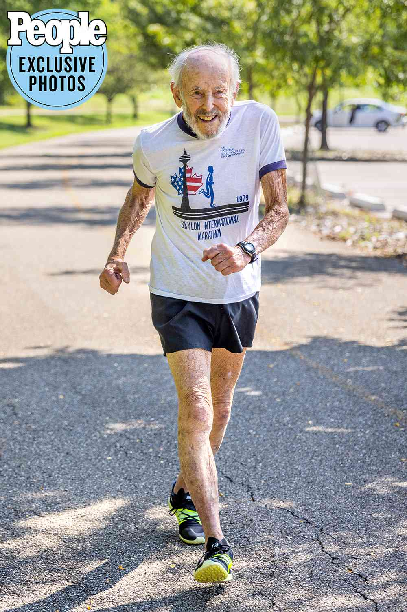

I have always been interested in health and fitness. I played sports growing up and have continued to stay active as an adult. I enjoy running, cycling, and lifing. To see more lifitng content, click here.
Here is an image of someone running a half marathon:

I am also interested in nutrition and healthy eating. I try to eat a balanced diet and avoid processed foods as much as possible.
In addition to physical health, I am also interested in mental health. I believe that mental health is just as important as physical health, and I try to take care of my mental well-being through mindfulness practices and self-care.
Overall, I believe that health and fitness are essential for a happy and fulfilling life. I am passionate about staying healthy and helping others do the same.